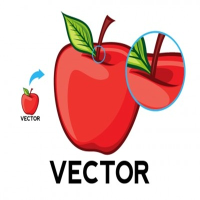

Grafika wektorowa to obrazy tworzone z matematycznych kształtów, które można dowolnie skalować bez utraty jakości.
Używa się jej np. do logotypów i ilustracji. Przykładowe formaty to SVG, AI i EPS.

Do tworzenia grafiki wektorowej używa się programów takich jak:
Adobe Illustrator
– jeden z najbardziej popularnych programów do tworzenia grafiki wektorowej.
CorelDRAW
– zaawansowane narzędzie do projektowania grafiki wektorowej, często używane w branży reklamowej.
Inkscape
– darmowy, open-source'owy program, który oferuje wiele funkcji podobnych do Adobe Illustratora.
Affinity Designer
– alternatywa dla Adobe Illustratora, ceniona za wydajność i niższy koszt.
Figma
– program głównie do projektowania interfejsów, ale także obsługuje grafikę wektorową.